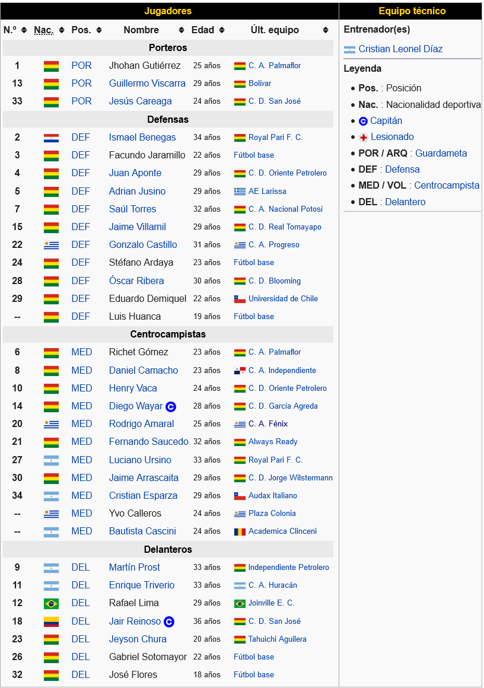

- Grupo A
- Grupo B
- Grupo C
- Grupo D

Club The Strongest El Club The Strongest es una institución deportiva con sede en la ciudad de La Paz, Bolivia, cuya actividad principal es el fútbol profesional. Fue fundado el 8 de abril de 1908 por doce jóvenes estudiantes, liderados por José Villamil Antes de la creación de la Liga del Fútbol Profesional Boliviano, The Strongest fue impulsor fundador y partícipe de los torneos en la primera competición organizada de fútbol en el país como fue la Copa Prefectural de La Paz. Fue uno de los fundadores de la Asociación de Fútbol de La Paz, el ente deportivo más antiguo de Bolivia, así como parten la creación de la Federación Boliviana de Fútbol. A nivel nacional es de los equipos más laureados del fútbol boliviano con 15 títulos de primera división y 17 subcampeonatos desde el inicio del profesionalismo en 1950, de los cuales tiene un tricampeonato y un bicampeonato. En la Copa Libertadores de América sus mejores actuaciones se dieron en las ediciones de 1990, 1994, 2014 y 2017 cuando alcanzó los octavos de final. A nivel internacional cuenta con 35 participaciones internacionales en torneos oficiales organizados por la Confederación Sudamericana de Fútbol. Y debutó en Copa Libertadores en 1965 y, desde entonces, ha participado del torneo en veintisiete ocasiones. Además, cuenta con cuatro participaciones en Copa Sudamericana, dos en Copa Conmebol y dos en Copa Merconorte. Disputa sus encuentros como local en el Estadio Hernando Siles, que cuenta con un aforo para 41 143 espectadores. Su clásico rival es el Bolívar también de la ciudad de La Paz, con el cual protagoniza el clásico boliviano.
